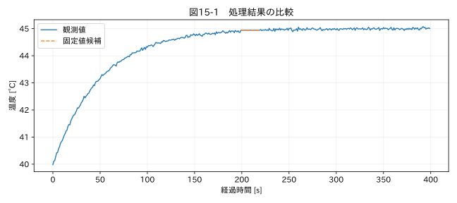

第IV部 センサーデータ特有の問題 / 第15章
この章の節
通信異常・値の固定・データ飛び
学習目標
固定値区間、レコード欠落、再送、ファイル重複を検出する。分割ファイルを結合するときに取得元と行位置を保持し、境界の異常を見落とさない。
15.1 安定した値か、止まった値か
温度が20秒間まったく変わらない。断熱された対象が安定しているのか、ロガーが前回値を繰り返しているのか。分解能が0.1 °Cなら、十分安定した温度が同じ数字になるのは自然である。一方、通常は細かく揺れる値が突然完全一致を続け、他のチャンネルも止まったなら、通信異常の疑いが強まる。
教材 09_prototypes.csv では199番の値を200〜219番へコピーした。コピーされた範囲は20点だが、固定値の連続区間には元の199番も含まれるので、候補は21点になる。先頭を除外すると、異常区間の開始を一つずらして報告することになる。
15.2 連続同一値を検出する
現在値が直前値と違う場所でグループを切り、各グループの長さを数える。NaNの連続を固定値と誤判定しないよう、欠損は別の扱いにする。本書では8点以上の完全一致を候補にするが、8は演習上の設定である。実務ではサンプル周期とセンサー分解能から、時間幅と許容変動を決める。
完全一致だけでなく、一定時間の最大−最小が小さい状態を候補にする方法もある。しかしゆっくりした真の変化を固定と見なすことがある。測定の最小変化幅、運転モード、他チャンネルの変化量、機器のheartbeat情報と組み合わせる。
15.3 シーケンス番号の価値
レコードの連番があれば、時刻が丸められていても欠落や再送を検査できる。連番が98、99、102なら100と101の欠落を疑う。ただし番号の上限での折り返しや再起動リセットを仕様として扱う必要がある。単純な差分だけで、正規の折り返しを大量欠落と誤判定しない。
通信エラーのステータスと測定値が別の時刻に更新される機器では、どの値にどの状態が対応するかも重要だ。受信した最後の状態をすべてのサンプルへ貼り付ければ、因果関係を誤ることがある。
関連する詳細実験は実践補講に掲載。入力形式・同期・補間・校正・多変量・チャンク境界を扱う。
実行するコードと結果
run.py · 共通処理の全ソース
教材フォルダで python examples/chapter15/run.py を実行。以下は省略のないスクリプト。共通モジュールは教材一式に含む。
from pathlib import Path
import sys
ROOT=Path(__file__).resolve().parents[2]
sys.path.insert(0,str(ROOT))
sys.path.insert(0,str(ROOT/'examples'))
import numpy as np
import pandas as pd
from common import load,truth,seconds,plot
from tsclean.core import numeric,timestamps,time_flags,hampel,freeze_candidates,interpolate_short,compare
df=load('09_prototypes');x=df['測定値'];f=freeze_candidates(x,8)
print('フリーズ候補範囲:',np.flatnonzero(f)[[0,-1]].tolist(),'候補数:',int(f.sum()))
a=pd.read_csv(ROOT/'datasets/raw/prototype_part1.csv');b=pd.read_csv(ROOT/'datasets/raw/prototype_part2.csv')
joined=pd.concat([a.assign(source='part1'),b.assign(source='part2')],ignore_index=True)
print('結合行数:',len(joined),'重複時刻に属する行:',int(joined['時刻'].duplicated(keep=False).sum()))
plot(15,seconds(df),{'観測値':x,'固定値候補':x.where(f)},'温度 [°C]')
検証環境での実行結果を開く
フリーズ候補範囲: [199, 219] 候補数: 21
結合行数: 410 重複時刻に属する行: 20

15.4 ファイル結合の境界
教材の分割ファイルは、part1の末尾とpart2の先頭に10行の重複を持ち、part2には追加電流列がある。pd.concat で結ぶと410行になり、追加列はpart1側で欠損になる。これは列が増えたことによる未測定であり、通信欠損と区別したい。
ファイル名順が時間順とは限らない。「測定_10.csv」が「測定_2.csv」より前に並ぶこともある。開始時刻、連番、試験IDなどから順序を決める。まず全ファイルの境界情報を一覧にし、重複・空白・列構成の変更を検査する。
ファイル境界で2点ずつ欠けた場合、各ファイル内だけで見れば短い欠損でも、結合後は長い欠損になる。局所フィルタの窓も境界をまたぐ。独立に処理する設計なら境界を未評価と明示し、連続処理する設計なら前後の状態を受け渡す必要がある。
15.5 隔離は原本を動かさずに行う
列が足りない、文字コードが違う、空ファイルなどの問題があれば、処理対象から隔離して理由を記録する。本書のCLIは元ファイルを移動せず、バッチのerrorsへ記録する。読み込めたものだけで「全件正常」と表示しない。失敗件数と未処理ファイルの一覧も品質情報である。
演習
基礎演習
固定値候補が199〜219番で21点になることを確認する。
応用演習
二つの分割ファイルを結合し、重複時刻に属する行数と余分な行数を区別して数える。
実務演習
試験中に新しい電流列が追加された。過去の空欄を前方補完または後方補完してよいか。
演習解答・解説を表示する
基礎：コピー先だけでなく、元の固定値区間先頭も含める。候補は原因確定ではない。
応用：重複時刻に属する行は20行、重複を一つずつ代表化すると余分な行は10行。ただし同じ観測の重複と確認してから採否を決める。
実務：過去には測っていなかったので補完しない。not_measured のような理由を付ける。後から測った電流を過去へ延長すると、未知の履歴を作ってしまう。
章末まとめ
値の固定、連番、通信状態、ファイル境界を組み合わせて調べる。原本を保ったまま、異常区間と未処理対象を記録する。